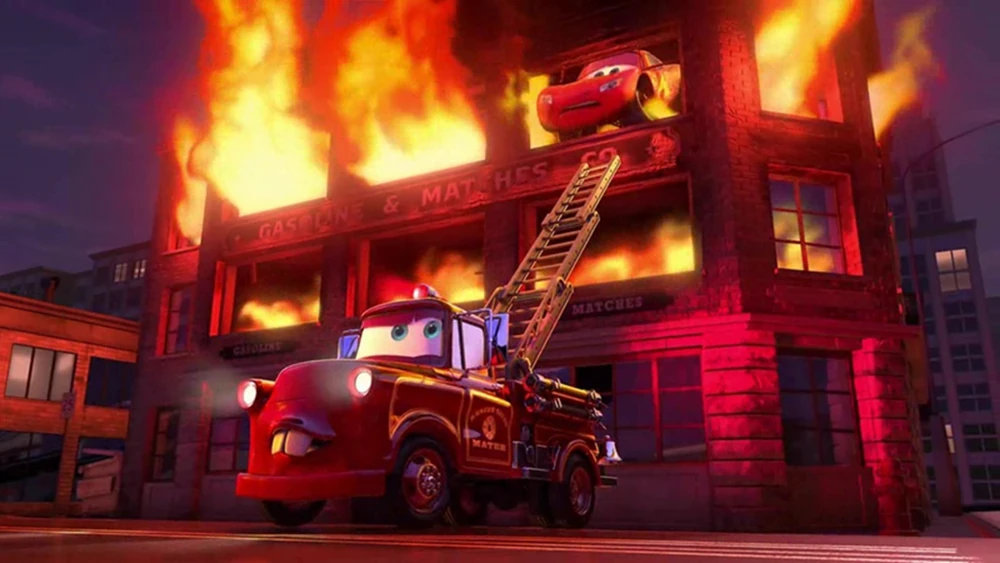

Złomek Strażak (Rescue Squad Mater)
Zygzak: „Przecież nigdy nie byłeś w straży pożarnej!”
Złomek: „Byłem i to jeszcze jak! Ugasiłem fabrykę benzyny i wyciągnąłem cię przez okno dachowe!”
Gdy w płonącym wieżowcu wybuchł pożar, miejscowe wozy nie mogły dotrzeć na najwyższe piętra. Wtedy do akcji wkroczył czerwony wóz gaśniczy Złomek. Uratował wszystkie uwięzione auta, a na koniec przeprowadził skomplikowaną operację uratowania pewnego czerwonego mistrza wyścigów.
Zobacz dowód
